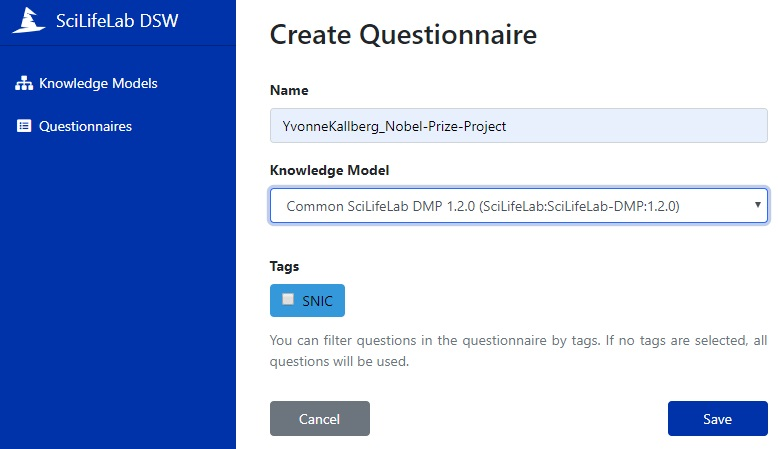

Instructions on how to start writing a DMP

1. Click on Questionnaires in left-side menu
2. Click on Create in the top right corner
3. Name the questionnaire and select Knowledge Model
- Write a Name based on your name and project, so it is easy to find later
- Select "Common SciLifeLab DMP 1.2.0" (or the highest version number) as Knowledge Model
- Click on Save and begin answering the questions
